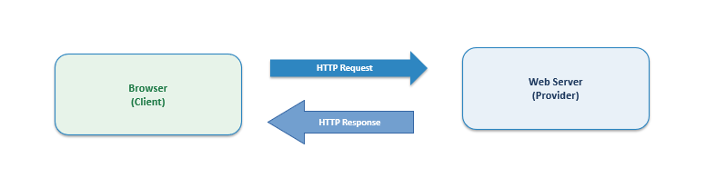

How a Browser Works
What actually happens, step by step, between you typing a URL and a page appearing on the screen.
Fetching & Parsing
When you type a URL, the browser first works out which server it needs. It takes the host name from the URL and uses DNS to turn it into an IP address.
Then it opens a connection over TCP/IP and sends an HTTP request. The server answers with an HTTP response (like 200 OK), some headers, and the actual content (HTML, an image, etc.).
After that the browser parses the HTML into a tree called the DOM, where every element and piece of text is a node. At the same time it parses the CSS into a tree of style rules for the page (the CSSOM). It builds these as the content comes in, which is why a page can start to show up before the whole page has loaded.

Rendering
Next the browser combines the DOM and the CSSOM into a render tree — the parts that are actually visible, with their styles worked out.
Then it does layout (sometimes called reflow), which works out the size and position of every box on the page. After that it paints, turning each box into actual pixels on the screen. Finally it composites the layers using the graphics card of the client machine to put the finished image together.
So the whole process is: parse → render tree → layout → paint → composite. Modern browsers try to do about 60 frames a second. If the main thread is busy, some frames get dropped and the page looks like it “lags”.
Rendering Engines
The rendering engine is the heart of a browser. It reads the HTML and CSS and makes the page that you see. A long time ago there were many engines, but now three main ones are used.
| Engine | Used by | Made by |
|---|---|---|
| Gecko | Firefox | Mozilla |
| Blink | Chrome, Edge | |
| WebKit | Safari | Apple |
Chrome used WebKit at first but split it into Blink in 2013, and Microsoft Edge switched to Chromium/Blink in 2019. Only Firefox (Gecko) and Safari (WebKit) still use a fully separate engine today.
JavaScript Engines
Web pages can be interactive because of JavaScript, a programming language that runs in the browser. Each big browser has its own engine for running JavaScript. These engines turn JavaScript code into something the computer can run, and they use tricks like just-in-time (JIT) compilation to run it fast.
| Engine | Browser | Made by |
|---|---|---|
| V8 | Chrome (and Edge) | |
| SpiderMonkey | Firefox | Mozilla |
| JavaScriptCore | Safari | Apple |